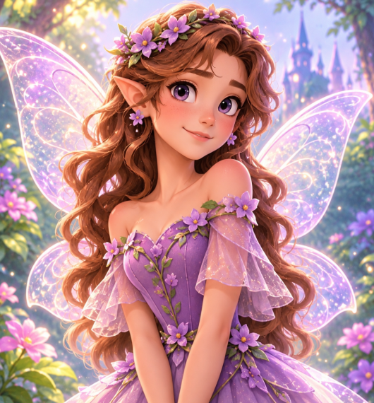
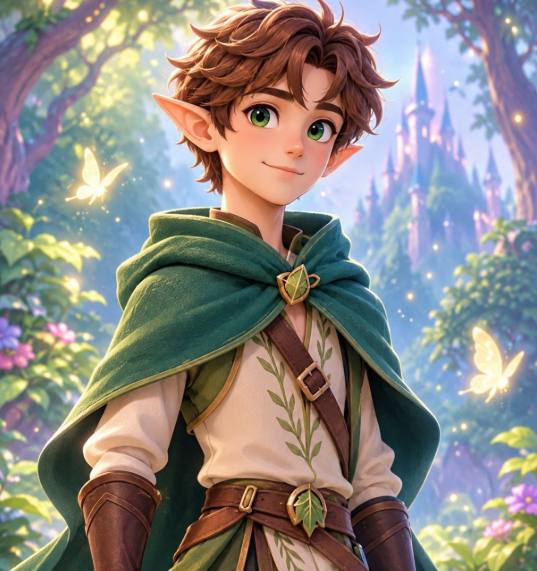
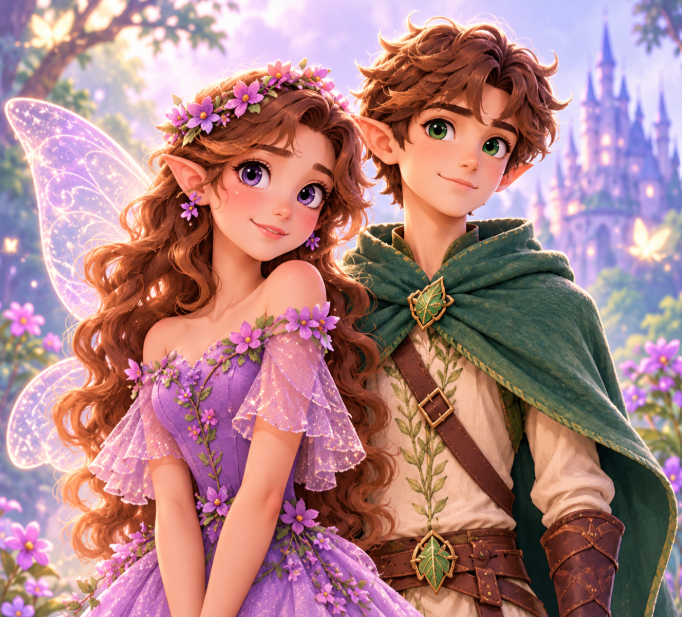
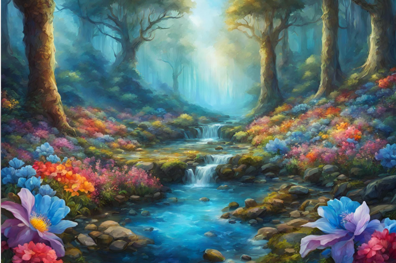
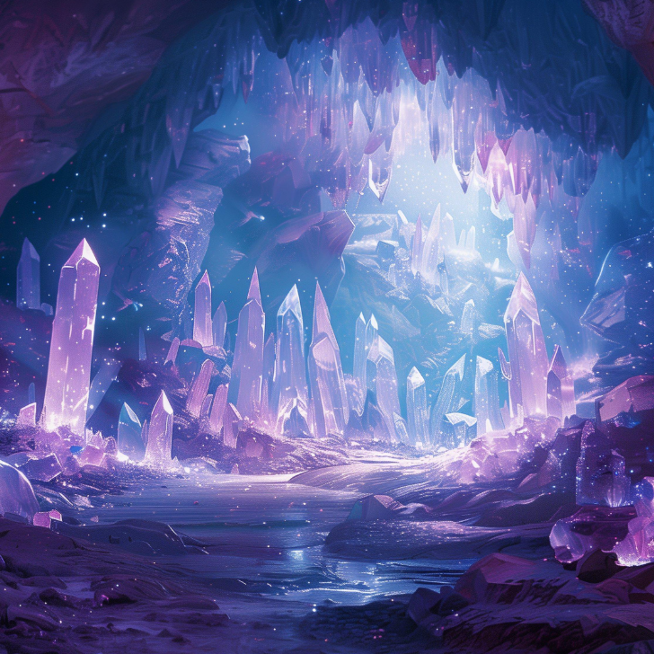

Lumina

Lumina es un hada alegre y brillante que siempre busca ayudar a los demás. Es bondadosa, curiosa y nunca pierde la esperanza.
Una aventura nos espera en el Bosque Encantado de Montree, un lugar lleno de criaturas fantásticas, flores luminosas y secretos por descubrir.
Acompaña a Lumina y Aelion en una misión para recuperar la magia de un reino que está a punto de perder su luz.
 Comenzar aventura
Comenzar aventura

Lumina es un hada alegre y brillante que siempre busca ayudar a los demás. Es bondadosa, curiosa y nunca pierde la esperanza.

Aelion es un elfo valiente y protector que acompaña y cuida a Lumina durante la aventura. Es inteligente, observador y leal.
CAPÍTULO 01
En el Bosque Encantado de Montree existía un árbol mágico conocido como el Árbol de Cristal. Este árbol era la fuente de luz y vida de todo el bosque.
Pero una mañana, algo cambió. Una niebla oscura comenzó a cubrir el bosque y el árbol empezó a perder su brillo.
Continuar leyendo →
UN VIAJE LLENO DE AVENTURAS

Lumina y Aelion decidieron emprender un viaje por los caminos del bosque. Durante su recorrido encontraron lugares increíbles y descubrieron que la niebla había afectado a todos los rincones de Montree.
Aunque tenían miedo, no se rindieron y siguieron adelante con valentía y esperanza.
Continuar la aventura →Durante su aventura, Lumina y Aelion visitarán tres lugares especiales donde encontrarán los elementos necesarios para salvar el bosque.

Un jardín lleno de flores brillantes donde se encuentra la flor de luz.

Un río mágico que brilla durante la noche y donde conseguirán la gota encantada.

Una cueva escondida entre las montañas donde se encuentra el cristal de energía.
Para salvar Montree, Lumina y Aelion deberán reunir tres elementos especiales que guardan la magia del bosque.

Una flor especial que ilumina los lugares oscuros.
Una gota mágica que representa la vida y energía del bosque.
Un cristal que guarda parte de la magia del Árbol de Cristal.

La antigua flor guarda un secreto. ¿Qué necesitan reunir Lumina y Aelion para recuperar la magia?

Lumina y Aelion usan los elementos mágicos para devolverle la luz al Árbol de Cristal. La niebla desaparece y el bosque vuelve a ser hermoso. Todos regresan a sus hogares y los dos amigos aprenden que juntos pueden superar cualquier problema.
Gracias por formar parte de esta aventura mágica y descubrir los secretos del Bosque Encantado de Montree.
Proyecto: El Secreto del Árbol de Cristal
Estudiante: Ashly Aguilar Díaz
Sección: 10-3
Subárea: Programación Web
Docente: Alejandra Rodríguez
Colegio: COTEPECOS
II Semestre